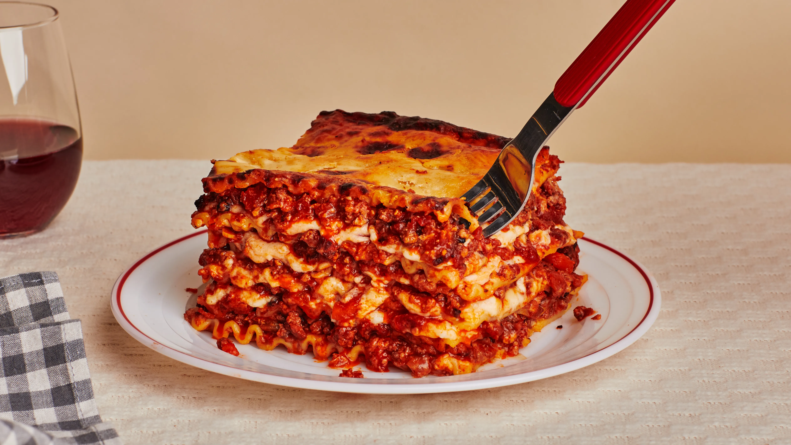

Bestest Lasagna Recipe.

When John Chandler submitted this lasagna recipe to Allrecipes more than 20 years ago, he had no idea how successful it would become. One of our top-performing recipes of all time, World's Best Lasagna racks up more than 7 million views per year and has ranked among the most popular lasagna recipes on the internet for two decades. Unfortunately, John unexpectedly passed away at 53 years old — read all about his life and legacy here.
Make our most popular lasagna today to find out what all the fuss is about!
Ingredients:
- Meta
- Onion and Garlic
- Tomato
- Sugar
- Spices
- Cheese, Eggs and Noodles
Steps:
- Make Meat Sauces
- Cook noodles
- Make mix
- Layer up
- Cover and Bake
All Recipies
<